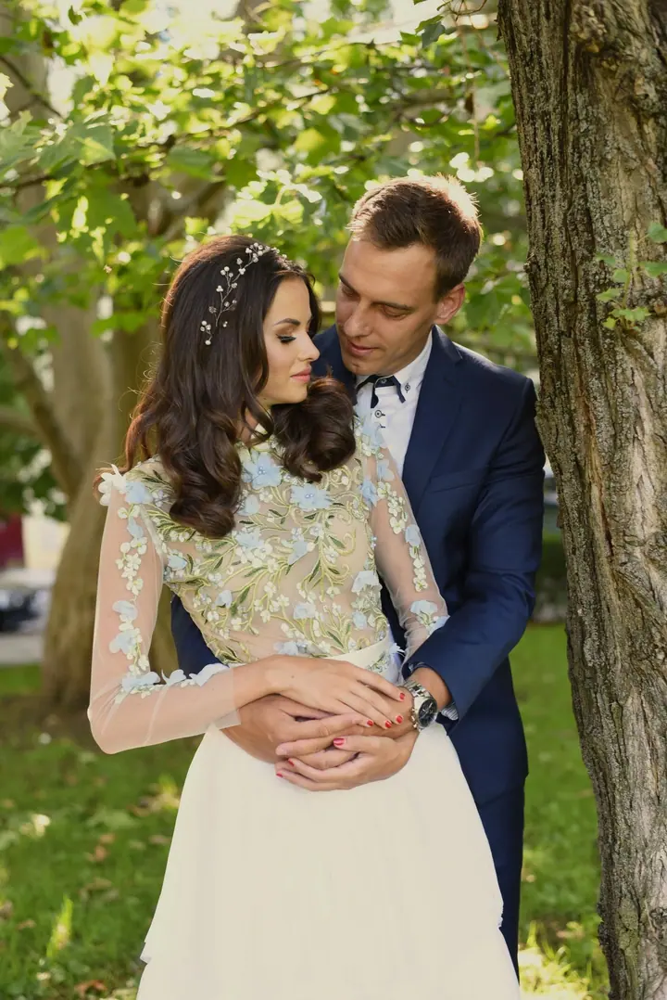
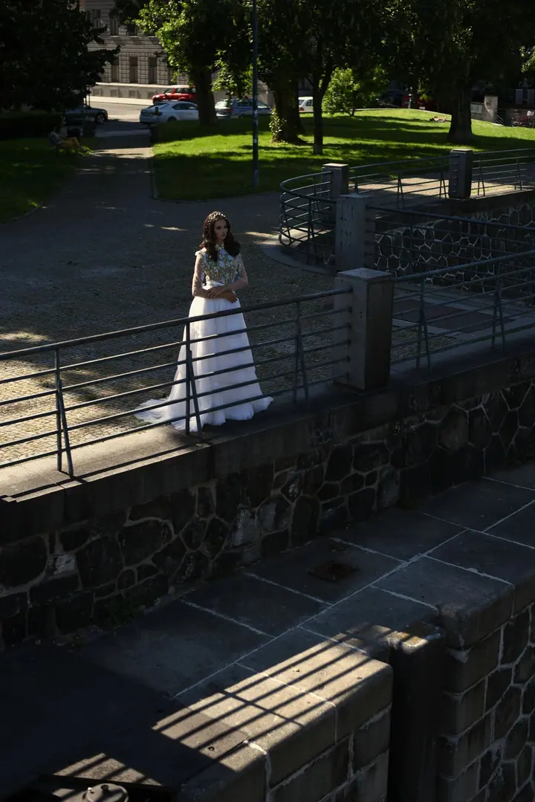
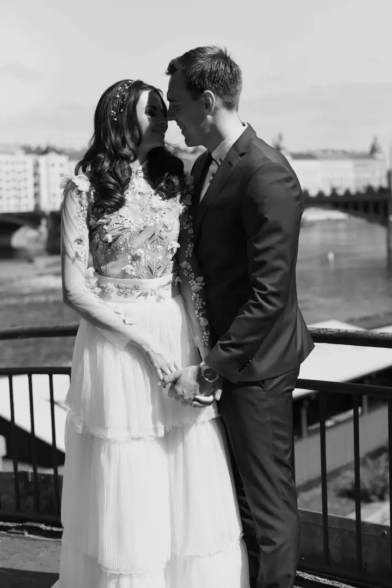
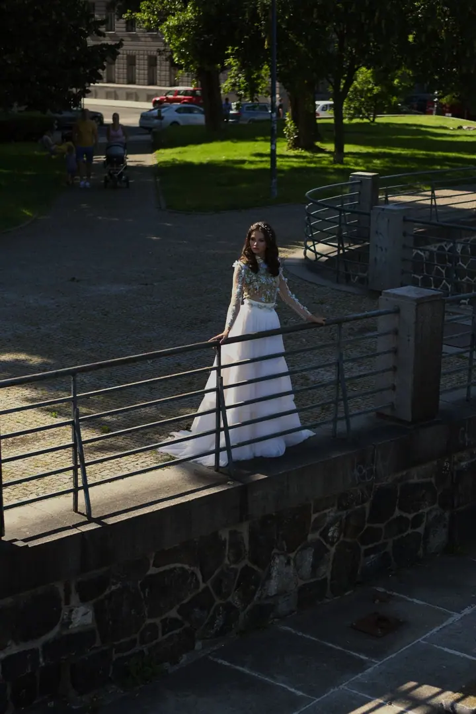

01 / 04
Svatby a párovky
Svatby fotím reportážně a dokumentuji celý den tak, jak plyne. Ráda s vámi udělám i samostatné párové focení.
Zeptat se na termín→



Svatební příběh ve všech odstínech
Zeptat se na termín →(01) Ahoj
Jmenuji se Ema Golcová a fotím hlavně svatby a portréty. Jsem z Ostravy, ale dojedu kamkoli. Ráda vyfotím i vaši rodinu nebo zdokumentuji sportovní akci .
(02) Co fotím
01 / 04
Svatby fotím reportážně a dokumentuji celý den tak, jak plyne. Ráda s vámi udělám i samostatné párové focení.
Zeptat se na termín→02 / 04
Portrétní fotografie je moje hlavní zaměření. Chci, aby fotky ukázaly, čím jste jedineční, a měly v sobě emoce.
Zeptat se na termín→03 / 04
Fotím venku a v klidu, s dětmi, s hrou i se smíchem. Odnesete si fotky, na kterých se poznáte.
Zeptat se na termín→Dále nabízím
Reportážně dokumentuji akce a sportovní události, třeba běžecké závody. Zachytím start, atmosféru podél trati i doběh do cíle.
↗(04) Postup
Od první zprávy po hotovou galerii.
Krok 1 z 4
Ozvěte se přes formulář, e-mailem nebo telefonem a napište mi, jaké focení si představujete a kdy.
Krok 2 z 4
Domluvíme se na místě, čase a na tom, co je pro vás důležité, aby focení odpovídalo vašemu příběhu.
Krok 3 z 4
Fotím v klidu a nenápadně. U svateb a akcí dokumentuji dění reportážně, u portrétů a rodin vás jemně vedu.
Krok 4 z 4
Fotky pečlivě vyberu a upravím a pak vám je předám online.
Každý příběh je unikátní
(05) Za objektivem
Vystudovala jsem obor fotografie a média na Střední umělecké škole v Ostravě a fotím už přes šest let. Nejvíc mě baví portréty, protože při nich můžu s lidmi navázat opravdové spojení a ukázat, čím jsou jedineční.
Svatby a události fotím reportážně. Nic nenaaranžuji, jen sleduji, co se děje, a zachytím váš příběh tak, jak opravdu vypadal. Každý příběh je jiný, a to mě na fotografii baví nejvíc.
Fotografie je pro mě i osobní tvorba. V roce 2023 jsem v opavské Galerii KUPE vystavovala soubor „Mnoho tváří“, který vznikl ve starém opuštěném domě. Mám ráda i módu a stále hledám nové způsoby, jak ukázat svůj pohled na svět.
Ema
Ema Golcová · Svatební, portrétní a reportážní fotografka
Jsem z Ostravy a nejčastěji fotím v Moravskoslezském kraji, ale dojedu kamkoli.
Ano, párovky fotím ráda, ať už jako samostatné focení, nebo jako součást svatby.
Ano, reportážně dokumentuji akce a sportovní události, například běžecké závody pro dospělé i pro děti.
Napište mi přes formulář na webu, na info@emagolcova.com nebo zavolejte na +420 792 360 437. Termín a podrobnosti spolu probereme.
(07) Kontakt
Napište pár vět o tom, co si představujete, a termín, který se vám hodí.